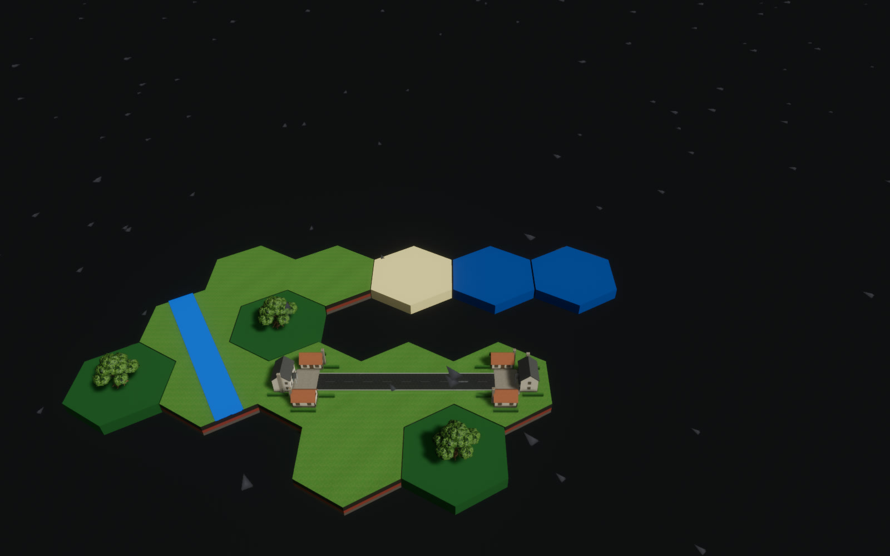

Show UI
H
Loading coast pack
2.4 MB
Tiles
Tab
Fits here
3
Doesn't fit here
9
1–9
pick
R
turn
F6
next panel
S3.1
S3.2
S3.3
S3.4
S3.5
S3.7
S3.8
S3.9
S4.2
S4.4
S5.1
S5.2
S6.1
S6.2
S6.3
S6.4
S7.2
S7.3
S7.4
S2.3
S2.4
S1.5
S10.1
S10.9